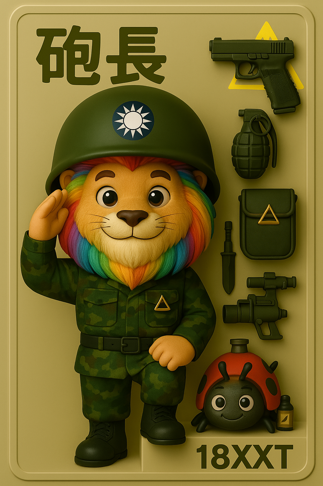

到了太武山上的圓環班，我們也接收了新的狗狗， 他是白子，眼睛是紅色的，毛是雪白的，體型是狼狗的樣貌。非常的兇猛甚至是瘋狂， 牠吠人時是直接從空中撲出去， 直到頸部的鐵鏈被拉直才從空中落地，非常的嚇人，但是，其實牠是隻乖狗狗。
山下的軍官每天都會上來跑步，打掃圓環時會遇到這些長官需要跟他們問好。 當時有一個很特別的任務，就是要記住新上任的指揮官名字，遇到長官不可以只說長官好， 而且要認出每一個長官，用長官的名字道早安。
圓環班是一個很特別的碉堡，我們在寢室的床後意外地發現了一道門， 開門後映入眼簾的是一張麻將桌，當時大家都笑了起來。 後來才發現，麻將桌旁的地下通道可以穿過登山步道，到達機砲所在的位置，在此守護著砲彈指揮總部的上空。
原本大家都說圓環班是一個很輕鬆的單位，只需要應付這些運動的長官就好。 後來，連部政戰士說兩岸關係變得不好，局勢越來越緊張。 圓環班開始要到對面的機砲站防空哨並且維護機砲，確保機砲要能正常運作。
在那裡使用的是太湖的水作為生活用水，水質黏滑，讓人難以痛快地洗澡。當時是三四月，每天早上都籠罩在大霧中，嚴重時伸手不見五指。 衣服總是濕漉漉的，只能穿在身上等它慢慢乾，這樣的環境讓人覺得洗澡似乎失去了意義。
在這段期間，去過毋忘在莒支援過幾次，也去最高點的21堡支援過，聽說最幸福的碉堡就是21堡，也跟我們堡長一直關係良好，但是那裡真的很冷，過年時會到-1度。